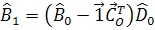
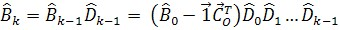
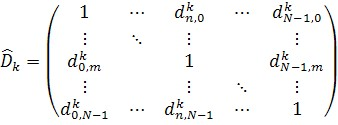
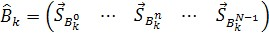
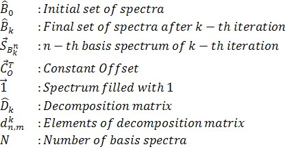
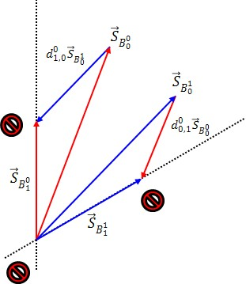

|
基光谱分解（数学）
|
如果基光谱不是纯组分光谱，则在将其用于算法、数据库搜索或出版之前，可能需要进行解混过程。重要的是，光谱为何混合并不重要，只要基是完备的且在相同实验条件下采集即可。在这种情况下，可以通过以下方程进行分解：





另请参阅： 基分析（数学）
备注
合理性
初始基光谱集只是整个可能向量空间的一个子空间。通过减去或加上光谱，不可能离开该子空间，即该过程不能创建新的组分。
下图显示了这在一组两个基光谱中是如何工作的。不可能离开由初始基光谱集定义的平面。
